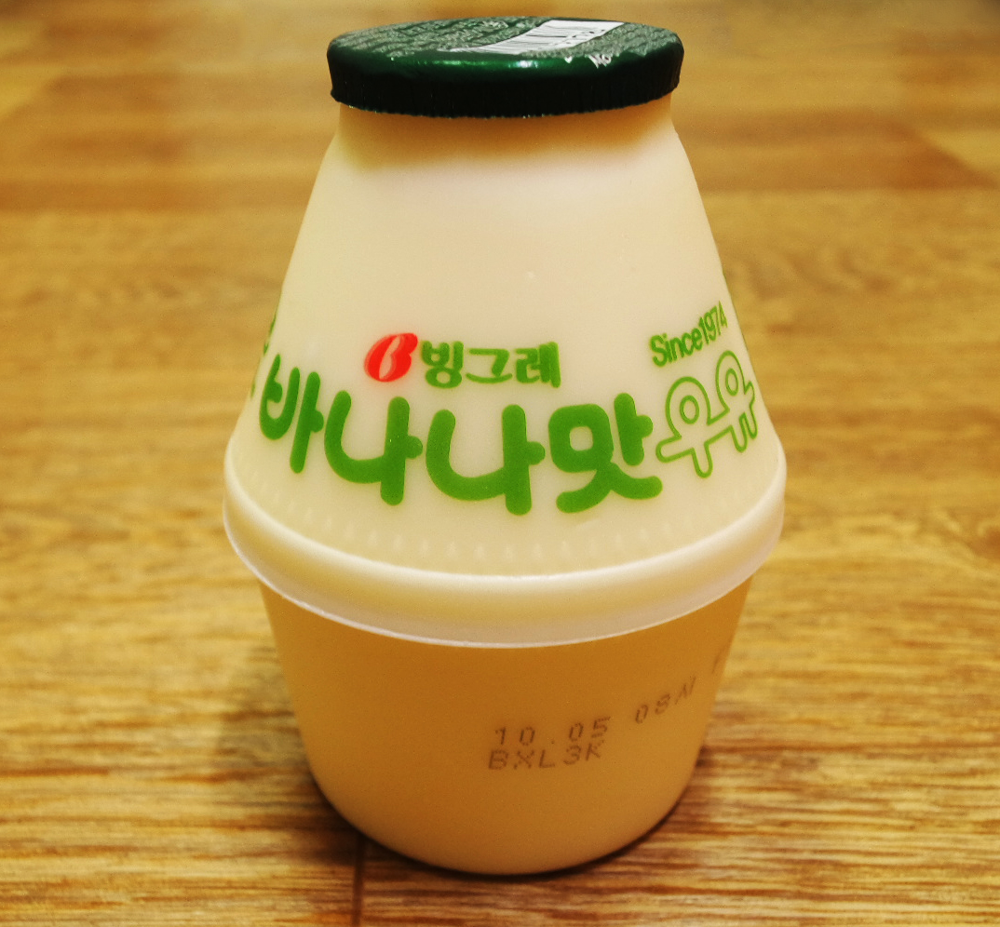

My favorite childhood memory would be banana milk.
Because as kid I always had one in my backpack for school.
I couldn't get over them it felt like heaven to me.
Sweet and refreshing it was for me to enjoy in summer.
I missed those good old days watching those Kdrama.
